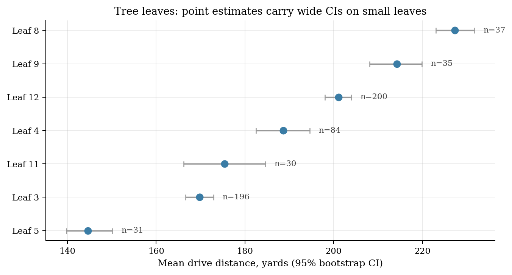
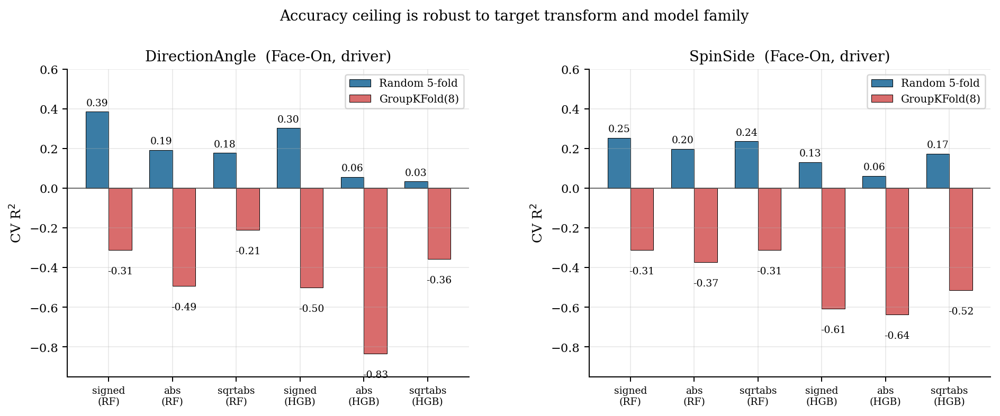

Summary
The CaddieSet corpus pairs per-phase pose features with launch-monitor data for 1,757 swings from only 8 golfers. This project is a secondary analysis that asks which body positions, at which swing phases, are associated with driver distance and accuracy — and how much of any apparent predictive power is real biomechanics versus memorised golfer identity.
1 · The identity gap is the main finding
Under random 5-fold CV, pose-only Random Forests reach R² ≈ 0.50 for driver distance. Under GroupKFold(8) grouped by golfer — where no golfer's swings appear in both train and test — the same model collapses to a strongly negative R². Across all four outcomes, the identity gap dominates.

| Outcome | View | Random 5-fold R² | GroupKFold(8) R² |
|---|---|---|---|
| Distance | Face-On | +0.50 | −4.36 |
| Distance | DTL | +0.48 | −3.72 |
| Ball Speed | Face-On | +0.56 | −4.67 |
| |Direction error| | Face-On | +0.19 | −0.49 |
| |Side spin| | Face-On | +0.20 | −0.37 |
Reading: at N = 8 golfers, pose-only models on CaddieSet are within-subject describers, not cross-subject predictors. The corpus is still valuable — but its current scale supports associative, not prescriptive, claims.
2 · Phase × outcome map with FDR control
For each (phase, view, outcome) tile, we plot the maximum extreme-groups |d| across the features in that tile. Cells with no feature surviving Benjamini–Hochberg FDR q < 0.05 are hatched — don't read pure noise.

Inflation reminder: extreme-groups d systematically overstates the continuous effect. The biggest d in the map (|d| = 1.36 for early-downswing hip shift) back-transforms to a continuous Pearson r of roughly +0.45, not a near-deterministic correlation.
3 · What still survives FDR and why
Shift hips toward the target in early downswing
Long hitters: +0.02 · Short hitters: −0.25. Survives FDR q < 10−4.
Keep the lead arm straighter at mid-backswing
Long hitters: 168° · Short hitters: 149°. Survives FDR q < 10−4.
Preserve trail-leg flex at the top of the backswing (DTL)
Long hitters keep the trail leg flexed (~166°); short hitters stand up nearly straight (~178°).
Quiet hips on the backswing — weaker than it looks
Long hitters rotate hips ~11°; short hitters ~43°. Still FDR-significant, but the continuous r is modest.
Signs follow the most natural biomechanical reading of the public CaddieSet column names (no formal data dictionary of units/conventions is published). Magnitudes do not depend on that choice.
4 · Four clusters — but two track golfer identity
K-means in the Face-On pose space (K = 4, silhouette = 0.54, well above the permuted-label null) recovers four partitions. The per-golfer crosstab shows that two of them are effectively single-golfer pools.
A0
Avg 156 yd
82% Golfer 8 · entropy 0.87 bits
A1
Avg 191 yd
Spans all 8 golfers · entropy 2.54 bits
A2
Avg 183 yd
56% Golfer 5 · entropy 1.42 bits
A3
Avg 167 yd
89% Golfer 4 · entropy 0.50 bits

LOGO stability: mean Adjusted Rand Index between the full-sample clustering and a refit excluding one golfer is 0.956, but drops to 0.82–0.83 when Golfer 4 or Golfer 8 is held out. We therefore refer to the clusters as A0–A3 only — a population-level “aggressive rotator” archetype cannot be claimed from a cluster that is effectively one golfer.
5 · A within-sample rule tree, reported honestly
A depth-3 regression tree on the Face-On × driver subset compresses the strongest within-corpus associations into a readable form. Random CV R² = 0.34; GroupKFold(8) R² = −3.36. Depth sensitivity analysis shows the pattern is depth-insensitive; the GroupKFold number gets worse at deeper settings, indicating that added leaves chase golfer-specific structure.
2-LEFT-ARM-ANGLE > 160.9° // lead arm ~straight at mid-backswingAND
1-HIP-SHIFTED > -0.52 // hips not stuck behind at takeawayAND
4-HIP-SHIFTED > -0.15 // hips move target-ward early in downswingTHEN leaf mean ≈ 227 yd (95% bootstrap CI [223, 232], n = 37)
Because GroupKFold R² is negative, this rule path is a within-sample description, not a population prescription. It describes what covaries with long drives in these eight golfers.


6 · Robustness of the power/accuracy gap
Is the gap between distance and accuracy R² an artefact of the |·| transform or the Random Forest choice? No. Across three transforms (signed, |y|, √|y|) and two models (Random Forest, HistGradientBoosting), random-CV R² is positive and GroupKFold R² is negative in every cell.

7 · Distributional shifts, top-6 features

8 · Reproducing the results
git clone https://github.com/edwardxiong2027/caddieset-rules.git cd caddieset-rules python -m venv .venv && source .venv/bin/activate pip install -r requirements.txt # Place CaddieSet.csv in data/ (obtain from the original authors) python src/01_explore.py python src/02_effect_sizes.py # extreme-groups d + Pearson r + BH-FDR + GroupKFold R^2 python src/03_archetypes.py # K sweep, per-golfer crosstab, LOGO ARI python src/04_rules.py # tree + depth sweep + per-leaf bootstrap CI python src/06_accuracy_robust.py # transform x model x CV robustness grid python src/05_make_figures.py # all 8 paper figures
Seeds are fixed throughout. Every figure on this page and in the paper is regenerated exactly by the scripts above.
9 · Citing this work
@misc{caddiesetrules2026,
title = {Phase-Localised Pose Correlates of Driver Distance in a Small-N
Golf Corpus: A Secondary, Associative Analysis of CaddieSet},
author = {Xiong, Edward},
year = {2026},
url = {https://github.com/edwardxiong2027/caddieset-rules}
}
@article{jung2025caddieset,
title = {CaddieSet: A Golf Swing Dataset with Human Joint Features
and Ball Information},
author = {Jung, Seunghyeon and Hong, Seoyoung and Jeong, Jiwoo and
Jeong, Seungwon and Choi, Jaerim and Kim, Hoki and Lee, Woojin},
journal = {arXiv preprint arXiv:2508.20491},
year = {2025}
}
The extended reference list (including Benjamini–Hochberg, Fitzsimons, Bartlett, Button, Letham, Lakkaraju, Angelino, Friedman & Popescu, Ustun & Rudin) is in references.bib.
10 · Limitations
- N = 8 golfers. This is the binding constraint. It is why the ceiling collapses under GroupKFold, why two of four clusters are single-golfer, and why this paper is descriptive, not prescriptive.
- Observational data. All associations are correlational. A straighter lead arm could be a cause of distance, or a marker of a golfer whose coil already supports distance.
- Inferred feature semantics. Signs follow the most natural biomechanical reading of public column names; formal units are not documented. Magnitudes do not depend on this choice.
- Extreme-groups d is inflated. We also report continuous Pearson r, the Fitzsimons back-transform, and Spearman ρ — the continuous effects are ~30–40% of the d magnitudes.
- No club-face or path data. The accuracy ceiling is capped by features the dataset does not include.